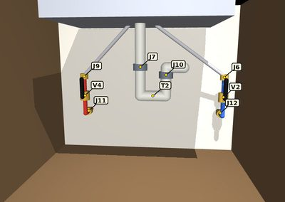
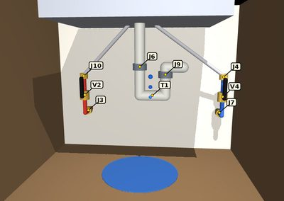
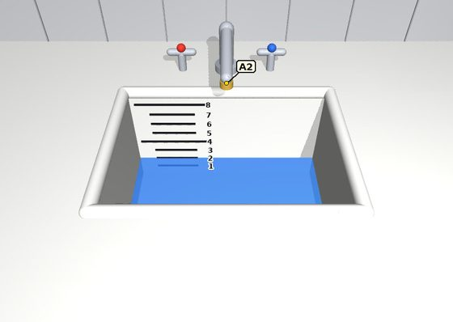
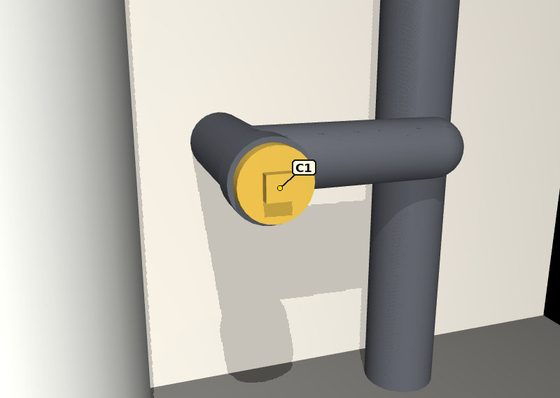
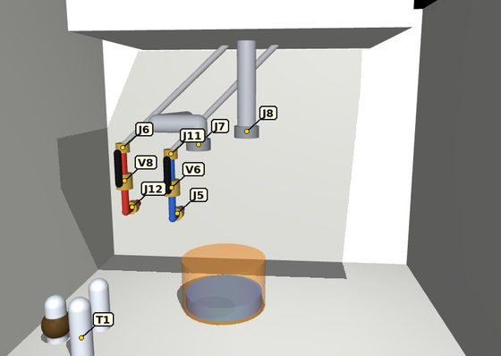
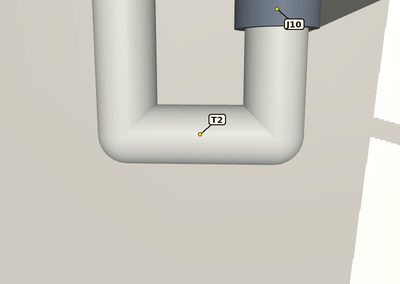
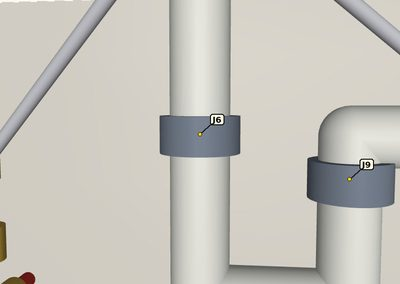
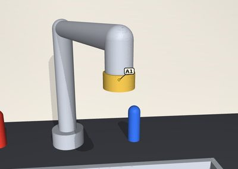
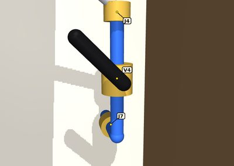

- 1 trilliongallons of water lost to household leaks in the US every year
- 550,000plumbers short in the US, forecast for 2026
- 1.7 millionskilled-trade job openings in the US every year through 2035
Maths is all on the page. Pipes aren’t.

The fault is hiddenThis trap is blocked.
Only a test shows itrun_tap cold 3 and the water rises.

Every test has a costTwo runs of the tap: 10 units of water damage.
Look. Test. Fix.

look counter
inspect C1
open_joint T1
run_tap both 1

trap_clog
branch_clogsupply_leak
drain_leak
aerator_clog
valve_not_openWho fixes the house
- Claude Fable 5.2
- Claude Haiku 5.5
- Claude Opus 5.5
- Claude Sonnet 5.5
- Codex, default model
- Reference plumber
- Services everything, never tests
- Clean job
- Fault left or misnamed
| Model | Run with | Level 1 | Level 3 | Level 4 | Done with a fault left | Actions | Time |
|---|
| Claude Fable 5.2 | Claude Code | 0.95 1/1 clean | 0.93 1/1 clean | 0.94 1/1 clean | 0 of 3 | 21 | 62 s |
|---|
| Claude Haiku 5.5 | Claude Code | 0.86 1/1 clean | 0.91 1/1 clean | 0.90 1/1 clean | 0 of 3 | 30 | 78 s |
|---|
| Claude Opus 5.5 | Claude Code | 0.94 1/1 clean | 0.93 1/1 clean | 0.93 1/1 clean | 0 of 3 | 25 | 104 s |
|---|
| Claude Sonnet 5.5 | Claude Code | 0.95 2/2 clean | 0.92 1/1 clean | 0.92 1/1 clean | 0 of 4 | 16 | 27 s |
|---|
| Codex, default model | Codex CLI | 0.90 2/2 clean | 0.68 1/2 clean | 0.58 1/2 clean | 2 of 6 | 22 | 57 s |
|---|
Scored by replay
- Agentany model, any harness
12 MCP tools↔picture + text- Housesimulator + renderer
action log→- Verifierreplays it from the seed
- →
- Score 0–1
- Base
- Dry floor
- Time left
- Right diagnosis
repair: share of faults fixed, −0.25 per part left worse
- 0.94reference plumber
- 0.48service everything, never test
- 0.00best of 5 exploits
harbor run --repo valuhaka/plumberbench -d plumberbench -a opencode -m MODEL